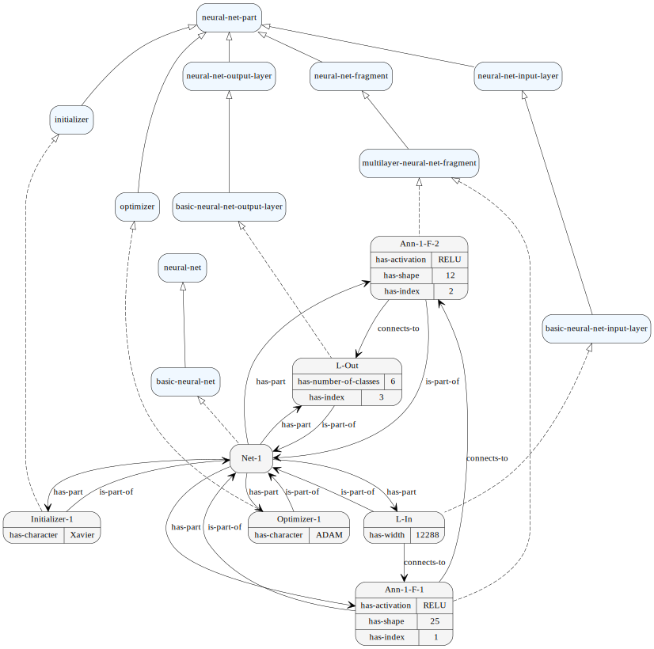
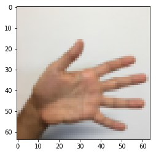
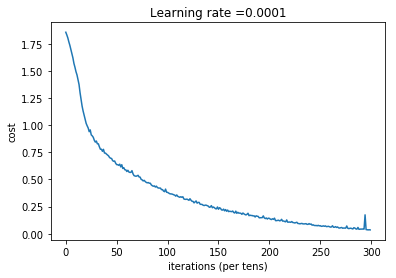
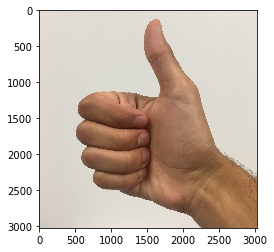

The basic, ontology based ANN configurator with TensorFlow¶
This is the example of ANN ontology which support TensorFlow
[1]:
from cognipy.ontology import Ontology,CQL
from cognipy.edit import CnlEditBox, CnlQueryForConcept
We need some functionalites that will allow us to manipulate/print the dataframes
[2]:
import pandas as pd
Now we are ready to load the core ontology. It just contains the basic ANN concepts. We will define the net a little bit later.
[3]:
ed2=CnlEditBox('./ann2.encnl')
ed2
Welcome to CogniPy
[5]:
onto=Ontology("cnl/file","./ann2.encnl")
We define now the internat structure of the network with few simple sentences:
[6]:
netName="Net-1"
[7]:
onto.insert_cnl(netName+" is a basic-neural-net that has-part L-In. \
L-In is an basic-neural-net-input-layer that connects-to Ann-1-F-1 and has-width equal-to 12288.\
Ann-1-F-1 is a multilayer-neural-net-fragment that connects-to Ann-1-F-2 and has-shape equal-to '25' and has-activation equal-to 'RELU'.\
Ann-1-F-2 is a multilayer-neural-net-fragment that connects-to L-Out and has-shape equal-to '12' and has-activation equal-to 'RELU'.\
L-Out is an basic-neural-net-output-layer that has-number-of-classes equal-to 6.\
")
Lets setup the initializer and optimiser for our ANN.
[8]:
onto.insert_cnl(netName+" has-part Initializer-1. Initializer-1 is an initializer that has-character equal-to 'Xavier'.")
[9]:
onto.insert_cnl(netName+" has-part Optimizer-1. Optimizer-1 is an optimizer that has-character equal-to 'ADAM'.")
[10]:
parts = onto.instances_of("a thing")
parts
[10]:
['Optimizer-1',
'Initializer-1',
'L-Out',
'Ann-1-F-2',
'Ann-1-F-1',
'L-In',
'Net-1']
[11]:
inp = onto.select_instances_of("a neural-net-input-layer that is-part-of "+netName)
outp = onto.select_instances_of("a neural-net-output-layer that is-part-of "+netName)
frags = onto.select_instances_of("a neural-net-fragment that is-part-of "+netName)
init = onto.select_instances_of("a initializer that is-part-of "+netName)
opti = onto.select_instances_of("a optimizer that is-part-of "+netName)
[12]:
x_n=inp['has-width'][0]
y_n=outp['has-number-of-classes'][0]
print(x_n)
print(y_n)
12288
6
[13]:
frags=frags.sort_values('has-index')
frags
[13]:
| Instance | connects-to | is-part-of | has-activation | has-shape | has-index | |
|---|---|---|---|---|---|---|
| 1 | Ann-1-F-1 | Ann-1-F-2 | Net-1 | RELU | 25 | 1 |
| 0 | Ann-1-F-2 | L-Out | Net-1 | RELU | 12 | 2 |
[14]:
shape=[int(x) for x in str.split(frags['has-shape'].values[1],":")]
shape
[14]:
[12]
[15]:
activations = frags['has-activation'].values[1]
activations
[15]:
'RELU'
[16]:
init
[16]:
| Instance | is-part-of | has-character | |
|---|---|---|---|
| 0 | Initializer-1 | Net-1 | Xavier |
[17]:
opti
[17]:
| Instance | is-part-of | has-character | |
|---|---|---|---|
| 0 | Optimizer-1 | Net-1 | ADAM |
TEST¶
[29]:
!pip install tensorflow
Collecting tensorflow
Downloading tensorflow-2.3.1-cp37-cp37m-win_amd64.whl (342.5 MB)
Requirement already satisfied: termcolor>=1.1.0 in c:\users\pkapl\anaconda3\envs\newds\lib\site-packages (from tensorflow) (1.1.0)
Requirement already satisfied: h5py<2.11.0,>=2.10.0 in c:\users\pkapl\anaconda3\envs\newds\lib\site-packages (from tensorflow) (2.10.0)
Requirement already satisfied: tensorboard<3,>=2.3.0 in c:\users\pkapl\anaconda3\envs\newds\lib\site-packages (from tensorflow) (2.3.0)
Requirement already satisfied: opt-einsum>=2.3.2 in c:\users\pkapl\anaconda3\envs\newds\lib\site-packages (from tensorflow) (3.3.0)
Requirement already satisfied: wrapt>=1.11.1 in c:\users\pkapl\anaconda3\envs\newds\lib\site-packages (from tensorflow) (1.12.1)
Requirement already satisfied: six>=1.12.0 in c:\users\pkapl\anaconda3\envs\newds\lib\site-packages (from tensorflow) (1.15.0)
Requirement already satisfied: absl-py>=0.7.0 in c:\users\pkapl\anaconda3\envs\newds\lib\site-packages (from tensorflow) (0.7.0)
Requirement already satisfied: protobuf>=3.9.2 in c:\users\pkapl\anaconda3\envs\newds\lib\site-packages (from tensorflow) (3.13.0)
Requirement already satisfied: keras-preprocessing<1.2,>=1.1.1 in c:\users\pkapl\anaconda3\envs\newds\lib\site-packages (from tensorflow) (1.1.2)
Requirement already satisfied: numpy<1.19.0,>=1.16.0 in c:\users\pkapl\anaconda3\envs\newds\lib\site-packages (from tensorflow) (1.17.4)
Requirement already satisfied: wheel>=0.26 in c:\users\pkapl\anaconda3\envs\newds\lib\site-packages (from tensorflow) (0.35.1)
Requirement already satisfied: astunparse==1.6.3 in c:\users\pkapl\anaconda3\envs\newds\lib\site-packages (from tensorflow) (1.6.3)
Requirement already satisfied: google-pasta>=0.1.8 in c:\users\pkapl\anaconda3\envs\newds\lib\site-packages (from tensorflow) (0.2.0)
Requirement already satisfied: grpcio>=1.8.6 in c:\users\pkapl\anaconda3\envs\newds\lib\site-packages (from tensorflow) (1.33.2)
Collecting tensorflow-estimator<2.4.0,>=2.3.0
Downloading tensorflow_estimator-2.3.0-py2.py3-none-any.whl (459 kB)
Requirement already satisfied: gast==0.3.3 in c:\users\pkapl\anaconda3\envs\newds\lib\site-packages (from tensorflow) (0.3.3)
Requirement already satisfied: google-auth-oauthlib<0.5,>=0.4.1 in c:\users\pkapl\anaconda3\envs\newds\lib\site-packages (from tensorboard<3,>=2.3.0->tensorflow) (0.4.2)
Requirement already satisfied: tensorboard-plugin-wit>=1.6.0 in c:\users\pkapl\anaconda3\envs\newds\lib\site-packages (from tensorboard<3,>=2.3.0->tensorflow) (1.7.0)
Requirement already satisfied: markdown>=2.6.8 in c:\users\pkapl\anaconda3\envs\newds\lib\site-packages (from tensorboard<3,>=2.3.0->tensorflow) (3.3.3)
Requirement already satisfied: setuptools>=41.0.0 in c:\users\pkapl\anaconda3\envs\newds\lib\site-packages (from tensorboard<3,>=2.3.0->tensorflow) (50.3.0.post20201006)
Requirement already satisfied: requests<3,>=2.21.0 in c:\users\pkapl\anaconda3\envs\newds\lib\site-packages (from tensorboard<3,>=2.3.0->tensorflow) (2.23.0)
Requirement already satisfied: werkzeug>=0.11.15 in c:\users\pkapl\anaconda3\envs\newds\lib\site-packages (from tensorboard<3,>=2.3.0->tensorflow) (1.0.1)
Requirement already satisfied: google-auth<2,>=1.6.3 in c:\users\pkapl\anaconda3\envs\newds\lib\site-packages (from tensorboard<3,>=2.3.0->tensorflow) (1.23.0)
Requirement already satisfied: requests-oauthlib>=0.7.0 in c:\users\pkapl\anaconda3\envs\newds\lib\site-packages (from google-auth-oauthlib<0.5,>=0.4.1->tensorboard<3,>=2.3.0->tensorflow) (1.3.0)
Requirement already satisfied: importlib-metadata; python_version < "3.8" in c:\users\pkapl\anaconda3\envs\newds\lib\site-packages (from markdown>=2.6.8->tensorboard<3,>=2.3.0->tensorflow) (1.5.0)
Requirement already satisfied: idna<3,>=2.5 in c:\users\pkapl\anaconda3\envs\newds\lib\site-packages (from requests<3,>=2.21.0->tensorboard<3,>=2.3.0->tensorflow) (2.8)
Requirement already satisfied: urllib3!=1.25.0,!=1.25.1,<1.26,>=1.21.1 in c:\users\pkapl\anaconda3\envs\newds\lib\site-packages (from requests<3,>=2.21.0->tensorboard<3,>=2.3.0->tensorflow) (1.24.1)
Requirement already satisfied: chardet<4,>=3.0.2 in c:\users\pkapl\anaconda3\envs\newds\lib\site-packages (from requests<3,>=2.21.0->tensorboard<3,>=2.3.0->tensorflow) (3.0.4)
Requirement already satisfied: certifi>=2017.4.17 in c:\users\pkapl\anaconda3\envs\newds\lib\site-packages (from requests<3,>=2.21.0->tensorboard<3,>=2.3.0->tensorflow) (2020.6.20)
Requirement already satisfied: cachetools<5.0,>=2.0.0 in c:\users\pkapl\anaconda3\envs\newds\lib\site-packages (from google-auth<2,>=1.6.3->tensorboard<3,>=2.3.0->tensorflow) (4.1.1)
Requirement already satisfied: pyasn1-modules>=0.2.1 in c:\users\pkapl\anaconda3\envs\newds\lib\site-packages (from google-auth<2,>=1.6.3->tensorboard<3,>=2.3.0->tensorflow) (0.2.8)
Requirement already satisfied: rsa<5,>=3.1.4; python_version >= "3.5" in c:\users\pkapl\anaconda3\envs\newds\lib\site-packages (from google-auth<2,>=1.6.3->tensorboard<3,>=2.3.0->tensorflow) (4.6)
Requirement already satisfied: oauthlib>=3.0.0 in c:\users\pkapl\anaconda3\envs\newds\lib\site-packages (from requests-oauthlib>=0.7.0->google-auth-oauthlib<0.5,>=0.4.1->tensorboard<3,>=2.3.0->tensorflow) (3.1.0)
Requirement already satisfied: zipp>=0.5 in c:\users\pkapl\anaconda3\envs\newds\lib\site-packages (from importlib-metadata; python_version < "3.8"->markdown>=2.6.8->tensorboard<3,>=2.3.0->tensorflow) (3.0.0)
Requirement already satisfied: pyasn1<0.5.0,>=0.4.6 in c:\users\pkapl\anaconda3\envs\newds\lib\site-packages (from pyasn1-modules>=0.2.1->google-auth<2,>=1.6.3->tensorboard<3,>=2.3.0->tensorflow) (0.4.8)
Installing collected packages: tensorflow-estimator, tensorflow
Successfully installed tensorflow-2.3.1 tensorflow-estimator-2.3.0
[28]:
import math
import numpy as np
import matplotlib.pyplot as plt
import tensorflow as tf
from tensorflow.python.framework import ops
%matplotlib inline
np.random.seed(1)
import pandas as pd
---------------------------------------------------------------------------
ModuleNotFoundError Traceback (most recent call last)
<ipython-input-28-c9c7a7e21e88> in <module>
2 import numpy as np
3 import matplotlib.pyplot as plt
----> 4 import tensorflow as tf
5 from tensorflow.python.framework import ops
6
ModuleNotFoundError: No module named 'tensorflow'
[18]:
inp = onto.select_instances_of("a neural-net-input-layer that is-part-of "+netName)
outp = onto.select_instances_of("a neural-net-output-layer that is-part-of "+netName)
frags = onto.select_instances_of("a neural-net-fragment that is-part-of "+netName).sort_values('has-index')
init = onto.select_instances_of("a initializer that is-part-of "+netName)
opti = onto.select_instances_of("a optimizer that is-part-of "+netName)
n_x=inp['has-width'][0]
n_y=outp['has-number-of-classes'][0]
[19]:
onto.draw_graph()
[19]:

[20]:
def create_placeholders():
X = tf.placeholder(tf.float32,shape=(n_x,None))
Y = tf.placeholder(tf.float32,shape=(n_y,None))
return X, Y
[21]:
X, Y = create_placeholders()
print ("X = " + str(X))
print ("Y = " + str(Y))
X = Tensor("Placeholder:0", shape=(12288, ?), dtype=float32)
Y = Tensor("Placeholder_1:0", shape=(6, ?), dtype=float32)
[22]:
def get_initializer(character):
if character=="Xavier":
return tf.contrib.layers.xavier_initializer
elif character=="Zero":
return tf.zeros_initializer
raise NotImplementedError
[23]:
def get_activation(activation):
if activation=="RELU":
return tf.nn.relu
elif activation=="Sigmoid":
return tf.nn.sigmoid
elif activation=="Tanh":
return tf.nn.tanh
raise NotImplementedError
[24]:
def get_optimizer(optimizer):
if optimizer=="ADAM":
return tf.train.AdamOptimizer
elif optimizer=="GradientDescent":
return tf.train.GradientDescentOptimizer
raise NotImplementedError
[25]:
def initialize_parameters():
parameters=[]
activations=[]
W_init = get_initializer(init['has-character'][0])
b_init = tf.zeros_initializer
w=n_x
nfragrows=frags.shape[0]
idx=1
for i in range(0,nfragrows):
shape=[int(x) for x in str.split(frags['has-shape'].values[i],":")]
activation = get_activation(frags['has-activation'].values[i])
for lw in shape:
W1 = tf.get_variable("W"+str(idx), [lw,w], initializer = W_init(seed = 1))
b1 = tf.get_variable("b"+str(idx), [lw,1], initializer = b_init())
parameters.append({"W":W1,"b":b1})
activations.append(activation)
idx=idx+1
w=lw
lw=n_y
W1 = tf.get_variable("W"+str(idx), [lw,w], initializer = W_init(seed = 1))
b1 = tf.get_variable("b"+str(idx), [lw,1], initializer = b_init())
parameters.append({"W":W1,"b":b1})
activations.append(None)
return parameters, activations
[26]:
tf.reset_default_graph()
with tf.Session() as sess:
parameters, activations = initialize_parameters()
for layer in zip(parameters,activations):
print("W = " + str(layer[0]["W"]))
print("b = " + str(layer[0]["b"]))
print("f = " + str(layer[1]))
W = <tf.Variable 'W1:0' shape=(25, 12288) dtype=float32_ref>
b = <tf.Variable 'b1:0' shape=(25, 1) dtype=float32_ref>
f = <function relu at 0x000001C1844C9A60>
W = <tf.Variable 'W2:0' shape=(12, 25) dtype=float32_ref>
b = <tf.Variable 'b2:0' shape=(12, 1) dtype=float32_ref>
f = <function relu at 0x000001C1844C9A60>
W = <tf.Variable 'W3:0' shape=(6, 12) dtype=float32_ref>
b = <tf.Variable 'b3:0' shape=(6, 1) dtype=float32_ref>
f = None
[27]:
def forward_propagation(X,parameters,activations):
A1 = X
Z1 = None
for layer in zip(parameters,activations):
W1 = layer[0]['W']
b1 = layer[0]['b']
activation = layer[1]
Z1=tf.add(tf.matmul(W1,A1),b1)
if activation!=None :
A1=activation(Z1)
return Z1
[28]:
tf.reset_default_graph()
with tf.Session() as sess:
X, Y = create_placeholders()
parameters,activations = initialize_parameters()
Z3 = forward_propagation(X, parameters,activations)
print("Z3 = " + str(Z3))
Z3 = Tensor("Add_2:0", shape=(6, ?), dtype=float32)
[29]:
def compute_cost(Z1, Y):
"""
Computes the cost
Arguments:
Z1 -- output of forward propagation (output of the last LINEAR unit), of shape (6, number of examples)
Y -- "true" labels vector placeholder, same shape as Z3
Returns:
cost - Tensor of the cost function
"""
# to fit the tensorflow requirement for tf.nn.softmax_cross_entropy_with_logits(...,...)
logits = tf.transpose(Z1)
labels = tf.transpose(Y)
cost = tf.reduce_mean(tf.nn.softmax_cross_entropy_with_logits(logits = logits, labels = labels))
return cost
[30]:
tf.reset_default_graph()
with tf.Session() as sess:
X, Y = create_placeholders()
parameters,activations = initialize_parameters()
Z1 = forward_propagation(X, parameters,activations)
cost = compute_cost(Z1, Y)
print("cost = " + str(cost))
WARNING:tensorflow:From <ipython-input-29-633496ab49e3>:17: softmax_cross_entropy_with_logits (from tensorflow.python.ops.nn_ops) is deprecated and will be removed in a future version.
Instructions for updating:
Future major versions of TensorFlow will allow gradients to flow
into the labels input on backprop by default.
See `tf.nn.softmax_cross_entropy_with_logits_v2`.
cost = Tensor("Mean:0", shape=(), dtype=float32)
[31]:
def model(X_train, Y_train, X_test, Y_test, learning_rate = 0.0001,
num_epochs = 1500, minibatch_size = 32, print_cost = True):
ops.reset_default_graph() # to be able to rerun the model without overwriting tf variables
tf.set_random_seed(1) # to keep consistent results
seed = 3 # to keep consistent results
(n_x, m) = X_train.shape # (n_x: input size, m : number of examples in the train set)
n_y = Y_train.shape[0] # n_y : output size
costs = [] # To keep track of the cost
X, Y = create_placeholders()
parameters,activations = initialize_parameters()
Z1 = forward_propagation(X,parameters,activations)
cost = compute_cost(Z1,Y)
optimizer = get_optimizer(opti['has-character'][0])(learning_rate = learning_rate).minimize(cost)
init = tf.global_variables_initializer()
# Start the session to compute the tensorflow graph
with tf.Session() as sess:
# Run the initialization
sess.run(init)
# Do the training loop
for epoch in range(num_epochs):
epoch_cost = 0. # Defines a cost related to an epoch
num_minibatches = int(m / minibatch_size) # number of minibatches of size minibatch_size in the train set
seed = seed + 1
minibatches = random_mini_batches(X_train, Y_train, minibatch_size, seed)
for minibatch in minibatches:
# Select a minibatch
(minibatch_X, minibatch_Y) = minibatch
# IMPORTANT: The line that runs the graph on a minibatch.
# Run the session to execute the "optimizer" and the "cost", the feedict should contain a minibatch for (X,Y).
_ , minibatch_cost = sess.run([optimizer, cost], feed_dict={X: minibatch_X, Y: minibatch_Y})
epoch_cost += minibatch_cost / num_minibatches
# Print the cost every epoch
if print_cost == True and epoch % 100 == 0:
print ("Cost after epoch %i: %f" % (epoch, epoch_cost))
if print_cost == True and epoch % 5 == 0:
costs.append(epoch_cost)
# plot the cost
plt.plot(np.squeeze(costs))
plt.ylabel('cost')
plt.xlabel('iterations (per tens)')
plt.title("Learning rate =" + str(learning_rate))
plt.show()
# lets save the parameters in a variable
parameters = sess.run(parameters)
print ("Parameters have been trained!")
# Calculate the correct predictions
correct_prediction = tf.equal(tf.argmax(Z1), tf.argmax(Y))
# Calculate accuracy on the test set
accuracy = tf.reduce_mean(tf.cast(correct_prediction, "float"))
print ("Train Accuracy:", accuracy.eval({X: X_train, Y: Y_train}))
print ("Test Accuracy:", accuracy.eval({X: X_test, Y: Y_test}))
return parameters,activations
[32]:
import h5py
def load_dataset():
train_dataset = h5py.File('./datasets/train_signs.h5', "r")
train_set_x_orig = np.array(train_dataset["train_set_x"][:]) # your train set features
train_set_y_orig = np.array(train_dataset["train_set_y"][:]) # your train set labels
test_dataset = h5py.File('./datasets/test_signs.h5', "r")
test_set_x_orig = np.array(test_dataset["test_set_x"][:]) # your test set features
test_set_y_orig = np.array(test_dataset["test_set_y"][:]) # your test set labels
classes = np.array(test_dataset["list_classes"][:]) # the list of classes
train_set_y_orig = train_set_y_orig.reshape((1, train_set_y_orig.shape[0]))
test_set_y_orig = test_set_y_orig.reshape((1, test_set_y_orig.shape[0]))
return train_set_x_orig, train_set_y_orig, test_set_x_orig, test_set_y_orig, classes
[33]:
# Loading the dataset
X_train_orig, Y_train_orig, X_test_orig, Y_test_orig, classes = load_dataset()
[34]:
# Example of a picture
index = 0
plt.imshow(X_train_orig[index])
print ("y = " + str(np.squeeze(Y_train_orig[:, index])))
y = 5

[35]:
def convert_to_one_hot(Y, C):
Y = np.eye(C)[Y.reshape(-1)].T
return Y
[36]:
# Flatten the training and test images
X_train_flatten = X_train_orig.reshape(X_train_orig.shape[0], -1).T
X_test_flatten = X_test_orig.reshape(X_test_orig.shape[0], -1).T
# Normalize image vectors
X_train = X_train_flatten/255.
X_test = X_test_flatten/255.
# Convert training and test labels to one hot matrices
Y_train = convert_to_one_hot(Y_train_orig, 6)
Y_test = convert_to_one_hot(Y_test_orig, 6)
print ("number of training examples = " + str(X_train.shape[1]))
print ("number of test examples = " + str(X_test.shape[1]))
print ("X_train shape: " + str(X_train.shape))
print ("Y_train shape: " + str(Y_train.shape))
print ("X_test shape: " + str(X_test.shape))
print ("Y_test shape: " + str(Y_test.shape))
number of training examples = 1080
number of test examples = 120
X_train shape: (12288, 1080)
Y_train shape: (6, 1080)
X_test shape: (12288, 120)
Y_test shape: (6, 120)
[37]:
def random_mini_batches(X, Y, mini_batch_size = 64, seed = 0):
"""
Creates a list of random minibatches from (X, Y)
Arguments:
X -- input data, of shape (input size, number of examples)
Y -- true "label" vector (containing 0 if cat, 1 if non-cat), of shape (1, number of examples)
mini_batch_size - size of the mini-batches, integer
seed -- this is only for the purpose of grading, so that you're "random minibatches are the same as ours.
Returns:
mini_batches -- list of synchronous (mini_batch_X, mini_batch_Y)
"""
m = X.shape[1] # number of training examples
mini_batches = []
np.random.seed(seed)
# Step 1: Shuffle (X, Y)
permutation = list(np.random.permutation(m))
shuffled_X = X[:, permutation]
shuffled_Y = Y[:, permutation].reshape((Y.shape[0],m))
# Step 2: Partition (shuffled_X, shuffled_Y). Minus the end case.
num_complete_minibatches = math.floor(m/mini_batch_size) # number of mini batches of size mini_batch_size in your partitionning
for k in range(0, num_complete_minibatches):
mini_batch_X = shuffled_X[:, k * mini_batch_size : k * mini_batch_size + mini_batch_size]
mini_batch_Y = shuffled_Y[:, k * mini_batch_size : k * mini_batch_size + mini_batch_size]
mini_batch = (mini_batch_X, mini_batch_Y)
mini_batches.append(mini_batch)
# Handling the end case (last mini-batch < mini_batch_size)
if m % mini_batch_size != 0:
mini_batch_X = shuffled_X[:, num_complete_minibatches * mini_batch_size : m]
mini_batch_Y = shuffled_Y[:, num_complete_minibatches * mini_batch_size : m]
mini_batch = (mini_batch_X, mini_batch_Y)
mini_batches.append(mini_batch)
return mini_batches
[38]:
parameters,activations = model(X_train, Y_train, X_test, Y_test)
Cost after epoch 0: 1.855702
Cost after epoch 100: 1.016458
Cost after epoch 200: 0.733102
Cost after epoch 300: 0.572939
Cost after epoch 400: 0.468774
Cost after epoch 500: 0.381015
Cost after epoch 600: 0.313829
Cost after epoch 700: 0.254169
Cost after epoch 800: 0.203800
Cost after epoch 900: 0.166474
Cost after epoch 1000: 0.141408
Cost after epoch 1100: 0.107606
Cost after epoch 1200: 0.086730
Cost after epoch 1300: 0.061016
Cost after epoch 1400: 0.050911

Parameters have been trained!
Train Accuracy: 0.9990741
Test Accuracy: 0.725
[39]:
def prepare_parameters_for_prediction(parameters):
params=[]
for layer in parameters:
W1 = tf.convert_to_tensor(layer['W'])
b1 = tf.convert_to_tensor(layer['b'])
params.append({"W":W1,"b":b1})
return params
[40]:
params=prepare_parameters_for_prediction(parameters)
params
[40]:
[{'W': <tf.Tensor 'Const_2:0' shape=(25, 12288) dtype=float32>,
'b': <tf.Tensor 'Const_3:0' shape=(25, 1) dtype=float32>},
{'W': <tf.Tensor 'Const_4:0' shape=(12, 25) dtype=float32>,
'b': <tf.Tensor 'Const_5:0' shape=(12, 1) dtype=float32>},
{'W': <tf.Tensor 'Const_6:0' shape=(6, 12) dtype=float32>,
'b': <tf.Tensor 'Const_7:0' shape=(6, 1) dtype=float32>}]
[41]:
def predict(X, params,activations):
x = tf.placeholder("float", [12288, 1])
z3 = forward_propagation(x, params, activations)
p = tf.argmax(z3)
sess = tf.Session()
prediction = sess.run(p, feed_dict = {x: X})
return prediction
[42]:
import scipy
from PIL import Image
from scipy import ndimage
## START CODE HERE ## (PUT YOUR IMAGE NAME)
my_image = "thumbs_up.jpg"
## END CODE HERE ##
# We preprocess your image to fit your algorithm.
fname = "./images/" + my_image
image = np.array(ndimage.imread(fname, flatten=False))
my_image = scipy.misc.imresize(image, size=(64,64)).reshape((1, 64*64*3)).T
my_image_prediction = predict(my_image, params,activations)
plt.imshow(image)
print("Your algorithm predicts: y = " + str(np.squeeze(my_image_prediction)))
C:\Users\pkapl\Anaconda3\envs\ds\lib\site-packages\ipykernel_launcher.py:11: DeprecationWarning: `imread` is deprecated!
`imread` is deprecated in SciPy 1.0.0.
Use ``matplotlib.pyplot.imread`` instead.
# This is added back by InteractiveShellApp.init_path()
C:\Users\pkapl\Anaconda3\envs\ds\lib\site-packages\ipykernel_launcher.py:12: DeprecationWarning: `imresize` is deprecated!
`imresize` is deprecated in SciPy 1.0.0, and will be removed in 1.3.0.
Use Pillow instead: ``numpy.array(Image.fromarray(arr).resize())``.
if sys.path[0] == '':
Your algorithm predicts: y = 3

[ ]:
[ ]:
[ ]: